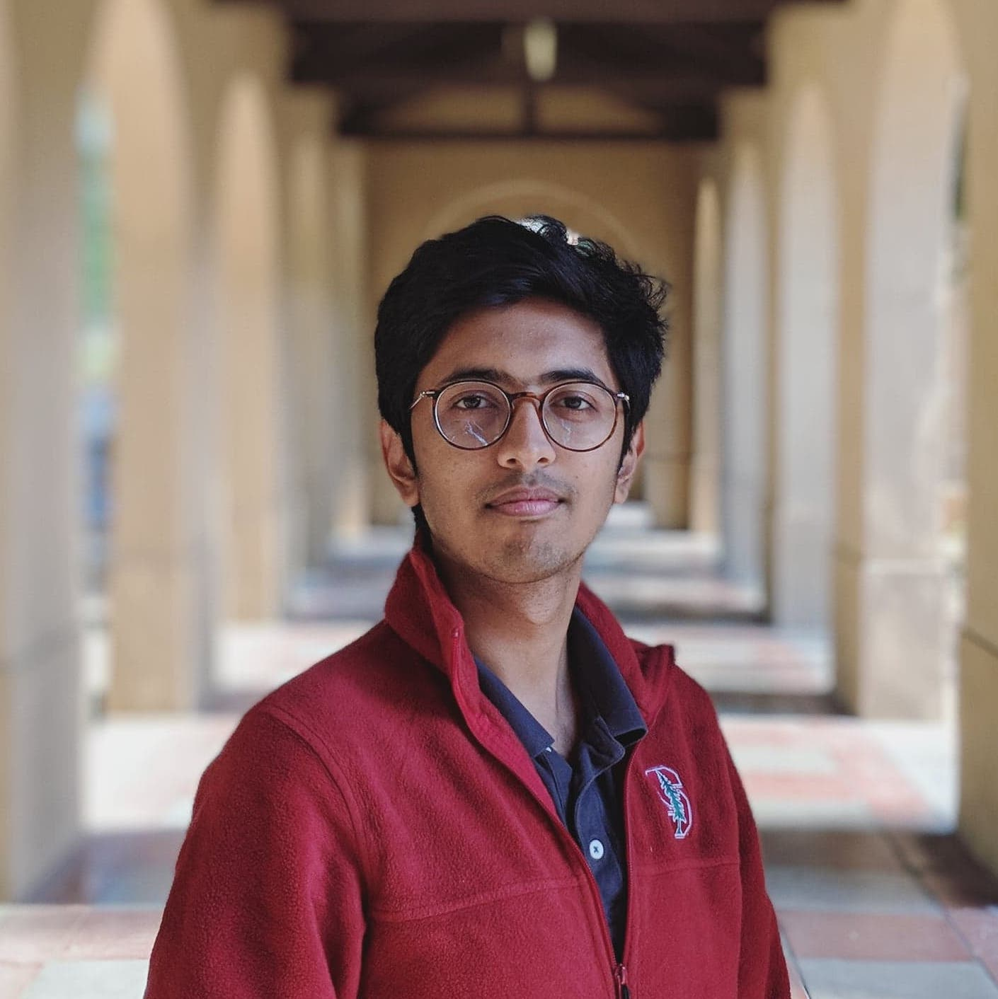
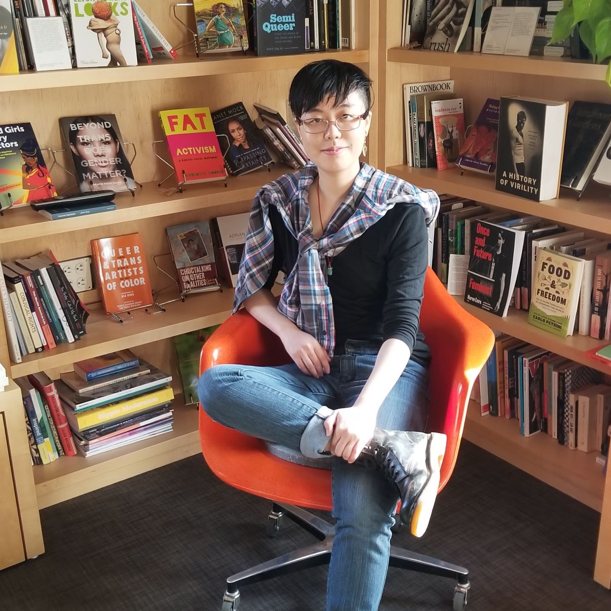

"I've noticed that there is a culture among some guys in tech which just try to exclude people who aren’t like them in race or gender. Discouraging people from [doing this] needs to begin when kids are in elementary school to establish that there isn’t a basis for this kind of bias."
"There are only three black chemical engineers out of the twenty. About half of the people in chemical engineering are women, which is good, but I’m still learning to navigate certain dynamics. When forming study groups, I know no one will reach out to me. I have to be the one who says, 'Hey, let’s work together'.
"Most of my friends, and people who are from low income backgrounds are mostly in my classes, but people who are from better backgrounds than I am are in much more advanced classes because they had those classes in their high schools. That is certainly something that has been challenging. The disparity in the behavior of the faculty or the department towards us who are taking sort of the low level classes compared to those who are taking high level classes is also something that has been noticeable."
"[Discrimination based on gender and race] is there, it is undeniable. Like, I’m not going to tell you its not there. But, I mean there are people that are there for you and are going to support you. There are resources here. It’s not impossible. It is going to be difficult, but it's not impossible."
"Hiring a diverse group of TA’s can make all the difference or making room for gender-non-specified designations on forms or even as simple as asking for preferred name versus a given name on a test so that it’s clear how a non-binary person or a trans person who has changed their name wants to identify."
"Once I went to a talk at the Stanford School of Medicine and I asked how it was like to combine a PhD with a potential path in Neurosurgery, and I was told not to do it by the individual giving the talk and I listed a few names, of white people who had done it, and the guy laughed and asked for my background and said, 'You can’t do it! They can, but not you. You won’t be able to; chose one or the other' and I was hurt; but I was also motivated."
"For my sophomore year summer, I did research at the University of Edinburgh. There was definitely fewer women; my professor and most of team were men. It was intimidating, but I had to realize that I know a lot and [should] be unafraid to step up and let them know I’m totally capable."
"I think the biggest thing [about increasing diveristy in tech] is exposure. There’s a lot of kids who may not know what engineering is like or just know the stigma that engineering is hard. But if you can expose somebody to how fun it is, they’ll be motivated to learn more and put in the effort to succeed in the program."
"I was never silent about [responding to gendered commentary]. That's another reason why those classes were kind of a toxic environment for me. It would’ve been better for my social life to shut up and take it. But, I couldn’t shut up and take it. So then, there was even more tension in the classroom.”